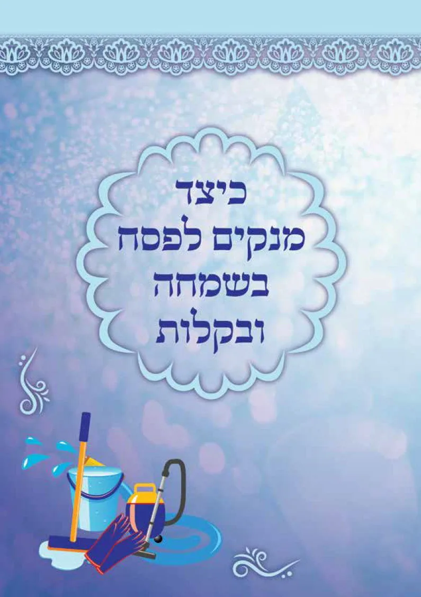

ק
הקול החמישי
יהודה טאוב · קול תודה
📖 קטלוג
☰
🙏 הודיה ותודה לה'
🎵 מזמור לתודה
💍 הקול החמישי – חתונה ובית יהודי
💝 כבוד האישה וזוגיות
🌳 ארץ ישראל
📜 מאמרים ושיעורים
🎮 משחקי לימוד ופעילויות
📚 ספרים וקטלוגים
🧑🏫 קול המורה וכלים למחנך
🏡 דירות אירוח בקרית אתא
בית
‹
הודיה ותודה לה'
‹
ההודיה במעגל השנה
כיצד מנקים לפסח בשמחה ובקלות

רעיונות נחמדים לנקות לפסח - מתוך שמחה והודיה
לחץ כאן לראות את החוברת - קריאה נעימה